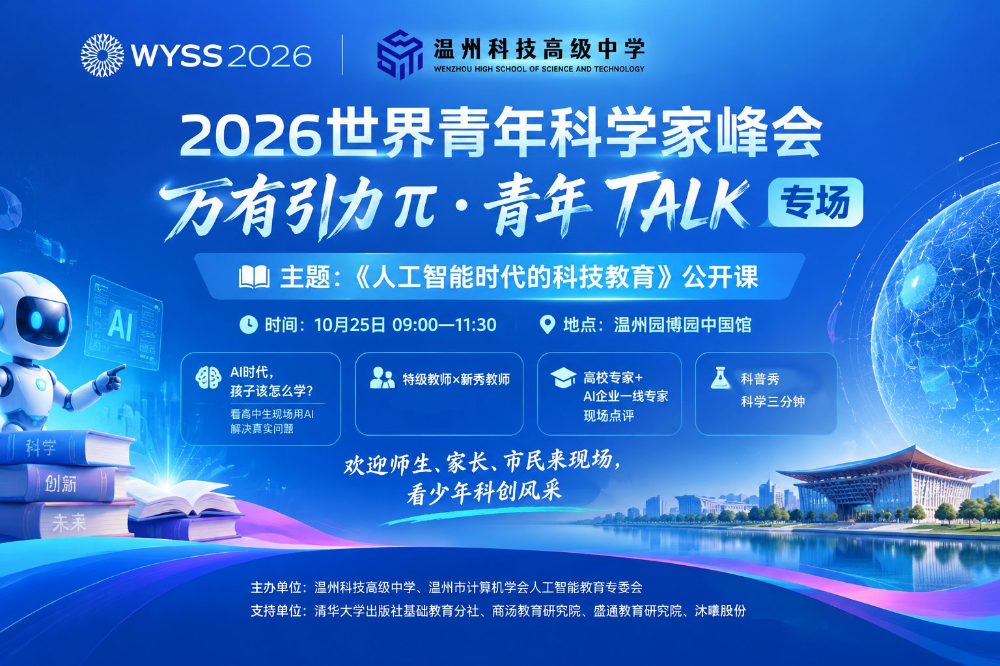
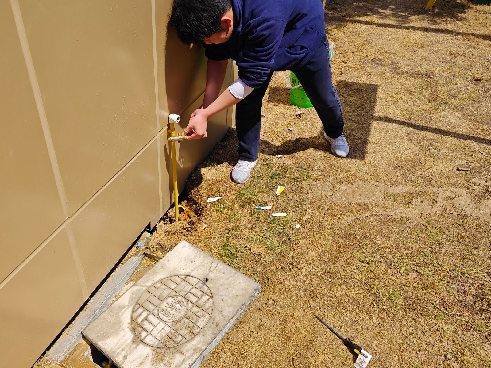
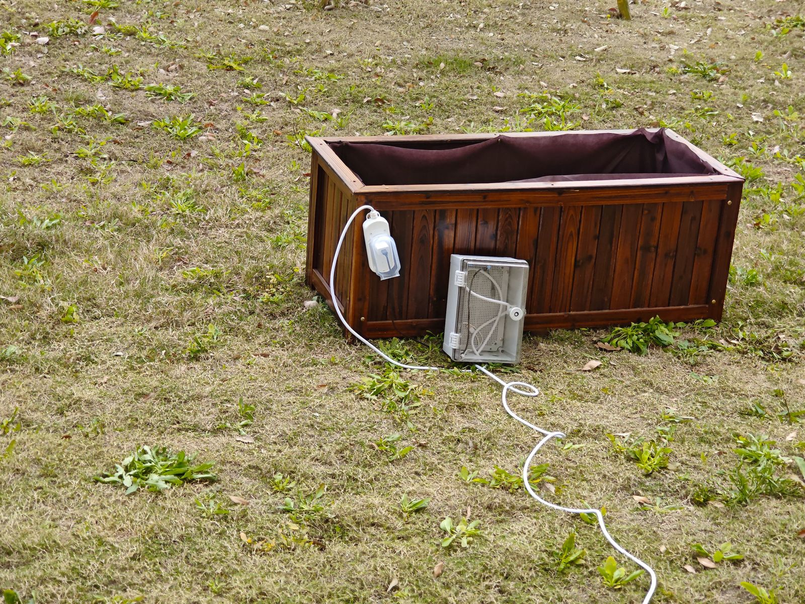

01 / 2026
数字人
从形象设定到语音驱动，试着让屏幕里的那个"人"真的开口说话、对上口型。
人工智能 · 交互2026
《人工智能时代的科技教育》公开课 · 学生科创作品集。 十七件作品，来自一间普通中学的科创中心 —— 从一颗会转的电机，到一台会认人的龙舟； 从激光在木板上走过的路径，到模型认出你抬手的那一帧。 技术在这里不是答案，是孩子们提问的方式。

这些文档原本只是腾讯文档里的一个个链接 —— 有的是操作手册，有的是开发日志，有的只是一张还没写完的进度表。把它们放在一起，才看得见一条路：从「我能不能让它动起来」，到「它能替谁解决什么问题」。
科创中心的设备清单写得很朴素：一台激光雕刻机、几台 3D 打印机、一堆舵机与开发板。但要把它变成课程，中间隔着大量琐碎的东西 —— 排烟管怎么接、木板怎么放平、模型为什么要加支撑、舵机的三根线到底哪根是信号线。
于是有了《科创中心入门指南》这样的文档：不讲原理，先讲怎么安全地把机器打开。也有了《什么样的舵机能够转？》这样看起来"太简单"的题目 —— 把一件小事拆到底，恰恰是工程思维最难的起点。
再往后，题目就变大了：用关键点检测识别划桨动作去驱动一条实体龙舟；用机器学习为国家级非遗瓯塑做配色辅助；用大模型给学生作文写批阅反馈；让一块白板自己把自己擦干净。技术开始落到具体的人、具体的场景上。
按方向浏览。带 图文 标记的作品，下方有完整的过程图集。
从形象设定到语音驱动，试着让屏幕里的那个"人"真的开口说话、对上口型。
为国家级非遗「瓯塑」做一套配色建议工具 —— 先读懂传统配色，再让模型学会推荐。
把 AI 放进灯影之间：传统戏曲的身段与生成式技术，能不能同台演一出？
AI for Science 方向的赛题拆解与学生分工表，是学校科学智能选题的底稿。
社团作品索引：从一张设计稿，到一个能上手玩的原型，中间隔了什么。
新成员的第一份手册：xTool 激光雕刻与 3D 打印的安全规范、软件界面与完整操作链路。
从模型摆正到切片生成：为什么悬空的地方必须加支撑，参数又如何决定成败。
用一颗 DC3V–6V 减速电机，把"能转"拆成接线、供电、控制三件事。
识别划桨动作、判定动作阶段、驱动实体龙舟 —— 数据集、模型、物联网、船体全链路。
把「多喝水」这句话做成一个有行为的硬件。文档按论文结构写：研究背景、研究目的、项目规划、实现思路、使用方法。
无人值守的摄影服务：景点、校园、证件照三种场景，各自怎么启动、怎么摄制、怎么交付。
以羽毛球为对象的学术写作实践，展示从提出问题到成文的完整研究流程。
一块真实农田的开发日志：土壤湿度、水分、温度三路传感，加一台控制水泵的执行机构。
人动，光跟着变形。用姿态识别把身体变成一件乐器。
让大模型给学生作文写批阅反馈。难点不在调用接口，而在提示词怎么写、评分口径怎么定。
正式题目是「基于树莓派与 ROS2 的教育型磁吸爬壁清洁机器人」—— 让它吸附在竖直白板上，自己爬、自己擦。
把旧手机、掌机、显卡一件件拆开，做成博物馆式的「标本图」：每个零件都有自己的位置和名字。
以下七件作品在腾讯文档里保留了过程照片与图纸。点击任意图片可放大查看 —— 里面既有写得很整齐的论文，也有拍到一半忘了擦镜头的现场。
一份写给"第一次进科创中心的人"的手册。它不解释激光的原理，而是把开机的每一步、以及会造成事故的每一个动作，先讲清楚：设备怎么摆、排烟管怎么接、图纸怎么放进 xTool Creative Space、速度与雕刻密度给多少。


3D 打印最容易失败的地方，往往不是打印机，而是"没加支撑"。这份文档用切片软件里的预览一帧帧说明：模型悬空的部分为什么会塌、支撑生成在哪些位置、层厚与填充如何影响一件作品的成败与耗时。


一个看起来"太简单"的题目。而它的价值恰恰在于简单：把电机、电压、驱动、信号线这些名词，落到一颗能用手摸到的 DC3V–6V 减速电机上，确认它转起来的那一秒，学生才真的拥有了它。

这是这批作品里工程量最大的一件。学生自己拍摄、标注了 30 组划桨动作样本，用关键点检测提取人体骨架，再用循环神经网络判断动作处于哪个阶段，通过物联网把指令发给实体龙舟 —— 最后还得把船体做出来。


一个没人守着的摄影点，怎么服务三种完全不同的人？景点游客要靠扫码自己唤醒系统；校园里学生不能用手机，于是改成距离传感器或物理按钮触发；拍证件照的人不知道怎么站，就让 AI 开口提示，免得歪头歪肩。同一个系统，三套启动逻辑。

这是全部作品里最「土」的一件：传感器要真的插进土里，水管要真的接到水龙头上，控制箱还得扛得住下雨。文档写得很实在 —— 元件怎么选、接线分几步、出了问题从哪儿查起，最后才是界面。




它不是「数字化」，是「拆开来看」。把一件电子产品拆到零件级，再按原来的位置重新排列、逐件标注 —— 这是最古老的博物学方法，被用在了最新的东西上。从旧手机到掌机再到显卡，拆的过程本身就是一次结构课。


把 17 份文档摊开，会发现流程惊人地一致。它不高级，但足够真实 —— 也正是我们希望学生带走的东西。
10 月 25 日上午，温州园博园中国馆。特级教师与新秀教师同台，高校专家与 AI 企业一线专家现场点评，还有「科学三分钟」科普秀。这些作品会在现场被再次打开、被追问、被质疑 —— 那才是它们真正的样子。
温州科技高级中学
温州市计算机学会人工智能教育专委会
清华大学出版社基础教育分社
商汤教育研究院 · 盛通教育研究院 · 沐曦股份